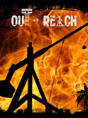

Out of Reach
Out of Reach
Details
|  | |
| Playtime | Not Played |
| Last Activity | Never |
| Added | 8/19/2023 14:50:25 |
| Modified | 8/19/2023 18:52:55 |
| Completion Status | Not Played |
| Library | Steam |
| Source | Steam |
| Platform | PC (Windows) |
| Release Date | 5/1/2015 |
| Community Score | 50 |
| Critic Score | |
| User Score | |
| Genre | Adventure Indie Role-playing (RPG) Simulator |
| Developer | Space Boat Studios |
| Publisher | Space Boat Studios |
| Feature | Co-Operative Massively Multiplayer Online (MMO) Multiplayer Single Player |
| Links | Steam Official Wikia Twitch |
| Tag | |
Description

The one who said that a combination of thunder storms and sea rocks is the worst thing that can happen to sailors, clearly didn't have to survive one. The real deal starts the morning after, and this is the exact time when you, dear player enter the cruel world of Out of Reach.

Although the archipelago was considered deserted before ships started to crash into sea rocks nearby, every kind of area on the island has its natural inhabitants who just don't give a warm welcome. Thinking twice every time before moving ahead could be one of the smartest things to do.

Staying on a beach after crushing your boat allows you to hunt for slowly moving animals and gives the ability to see at long distances. Disadvantage - you can be seen from exactly the same distance and there's always someone to call you his own slow-moving food.

In order to stay on the top of the food chain, you need to work harder than others. Everything starts from finding certain resources. Chop trees, mine stone, gather flax and food. Equip yourself and start searching for more sophisticated materials like copper and tin to produce bronze and other alloys.

Use a variety of workshops, furnaces and tools to craft armour and weapons. Check which combination of gear has better performance and suits your game style best. Upgrade equipment using new resources or items obtained in battle. Store, collect or trade your stuff with other players!

Looking for a place to store your timber or a quiet and cosy room to forge a sword and tan a skin of an elephant? Build your own stronghold! Use dozens of building elements like walls, stairs and floors to assemble the house of your dreams in an environment of your choice... or just take control of one.

The best solutions to problems are most often invented during battles. Everyday life on islands full of castaways is not an exception. To successfully protect your territory or gain control of a new one, you will need the advantage.
- Ballista
The greater the distance, the safer you are. Ballista may be slow to load and unable to move but the ability to pierce a target with a 1,5m dart few hundred meters away in no time shouldn't be underestimated. - Trebuchet
Unusual situations require extraordinary solutions. When an axe doesn't help or doors are just too thick it's time for a trebuchet. Construction costs both time and resources but nothing surprises like a forced entry through a wall. - Traps
Well, there's actually one thing that surprises more - a tricky and deadly trap! Use trip wires at the doors, stairs or wherever you want, connect them with ballistae or boulder throwers, place a bait and wait for the unwelcome guests. - Glider
When everything fails, you might consider an attack from above. Construct a tower, install a launcher ramp and take off on a glider to bomb enemies' bases, get through walls or just take a look from a different perspective.